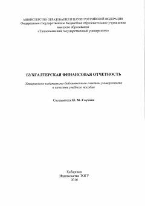

БФTashkilotlarning buxgalteriya moliyaviy hisobotlarini tuzish bo'yicha o'quv qo'llanma.
Ushbu o'quv qo'llanmasi tashkilotlarning buxgalteriya moliyaviy hisobotlarini tuzishning nazariy va uslubiy asoslarini yoritib beradi. Kitobda hisobot shakllari, ularni tayyorlash tartibi hamda nazorat savollari va topshiriqlar keltirilgan.